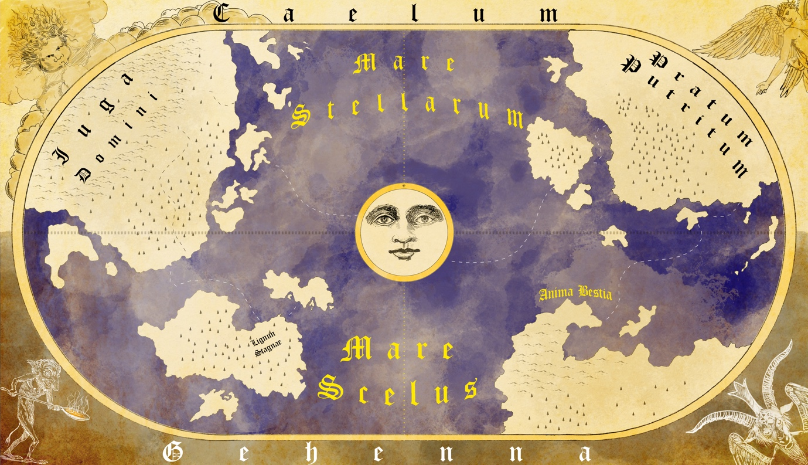

A traveller's atlas of the known world. Zoom in to see towns, then hamlets and back roads.

Drag to pan · scroll or pinch to zoom · towns appear as you zoom in, hamlets after them
Route colour shows its purpose. Solid lines are roads, dashed are tracks, broken lines at sea are sea lanes, and the striped line is a bridge.